Impresora 3D Ender S1 PRO

Constituyen el motor principal de la impresión 3D
La Ender 3 S1 Pro es como tener un “asistente personal” para tus primeras creaciones en 3D. Está pensada para que cualquier principiante pueda empezar a imprimir sin complicaciones: viene casi lista para usar, con un montaje sencillo y funciones modernas que normalmente solo se ven en impresoras más avanzadas.
Su sistema de nivelación automática se encarga del ajuste por ti, la cama caliente permite imprimir muchos tipos de materiales, y su pantalla táctil a color hace que todo sea tan fácil como usar un celular. Además, su extrusor de metal asegura acabados limpios y detallados.
Materiales que puede usar
Las impresoras 3D trabajan con “hilos de plástico” llamados filamentos. Imagina un carrete de estambre, pero en vez de hilo es un cable de plástico que la máquina derrite y va colocando capa por capa.
La Ender 3 S1 Pro es muy versátil y soporta varios tipos de filamento:
-
PLA (Polylactic Acid): El más usado por principiantes. Es fácil de imprimir, barato, y viene en muchos colores. Ideal para juguetes, figuras, soportes y prototipos.
-
ABS (Acrilonitrilo Butadieno Estireno): Más resistente y duradero que el PLA. Se usa para piezas que necesitan aguantar golpes, pero huele un poco fuerte al imprimirse.
-
PETG (Tereftalato de Polietileno Glicol): Un punto medio: fuerte como el ABS pero fácil de usar como el PLA. Se usa mucho en piezas que necesitan ser resistentes y flexibles (ej. soportes, piezas para casa).
-
TPU (poliuretano termoplástico): Es flexible, como una goma. Sirve para imprimir llaveros elásticos, fundas, juguetes blandos, etc.
Software que utiliza
La impresora por sí sola no entiende qué quieres imprimir. Necesita que le mandes las instrucciones.
El que se utiliza es: Ultimaker Cura: Gratuito, fácil de usar y compatible con la Ender 3 S1 Pro.
Este software convierte el modelo 3D (un archivo .STL o .OBJ) en un conjunto de instrucciones (archivo .gcode) que la impresora entiende.
Cómo instalar el software
1.- Ve a la página oficial de Ultimaker Cura: https://ultimaker.com/software/ultimaker-cura/
2.- Descarga la versión que corresponda a tu sistema operativo (Windows, Mac o Linux)
3.- Instala el programa como cualquier otro software (siguiente → siguiente → finalizar)
4.- La primera vez que abras Cura te pedirá que elijas tu impresora. * Busca en la lista “Creality Ender 3 S1 Pro” (si no aparece, puedes seleccionar la “Ender 3 S1” y luego ajustar manualmente los parámetros, pero en versiones recientes ya viene incluida).
5.- Ya puedes abrir un modelo 3D}
Reglas de diseño
| Regla | Descripción | Imagen |
|---|---|---|
| Sobresaliente | Los salientes se refieren a partes del modelo que se extienden sobre un área sin material debajo de ellos. |
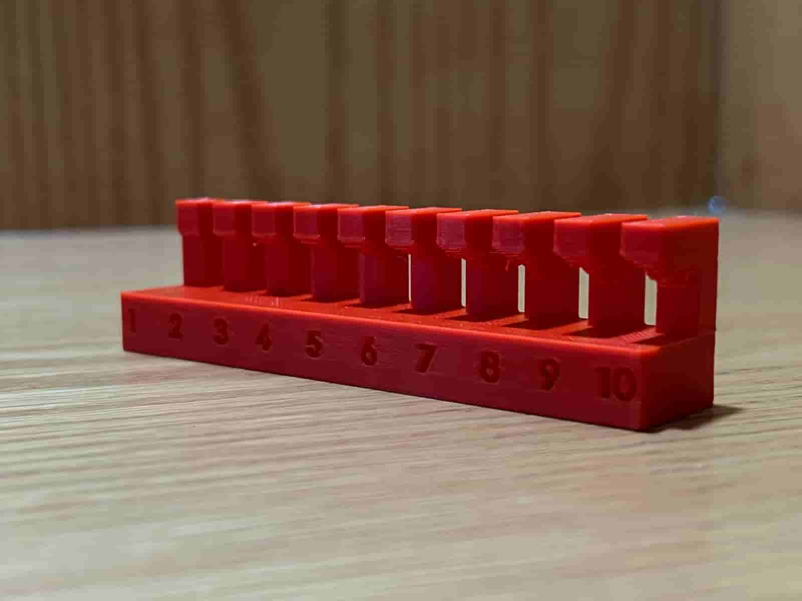 |
| Ángulo de impresión | El ángulo en el que se puede imprimir una característica sin soporte. Los ángulos de hasta 45 grados suelen ser manejables sin soporte, pero esto puede variar en función de la tecnología de material e impresión. |
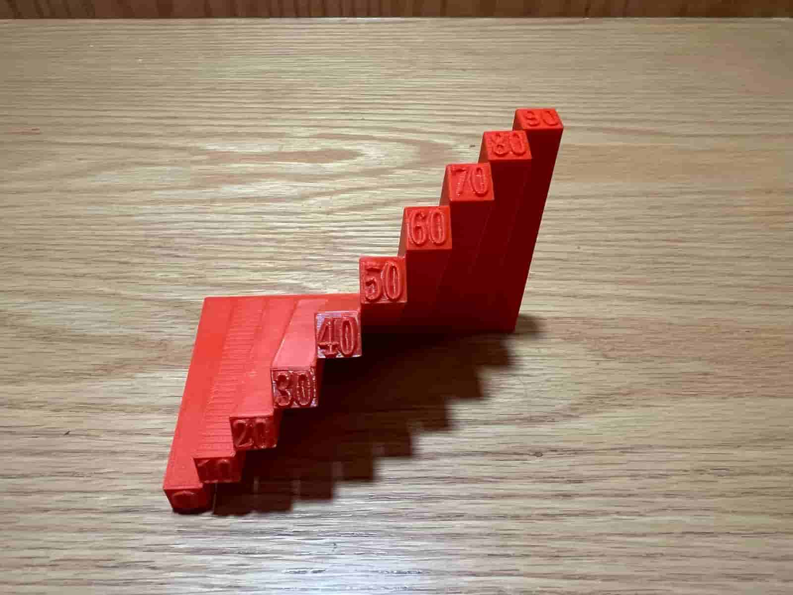 |
| Bridging | Se refiere a abarcar un hueco entre dos partes de una impresión sin soporte debajo. |
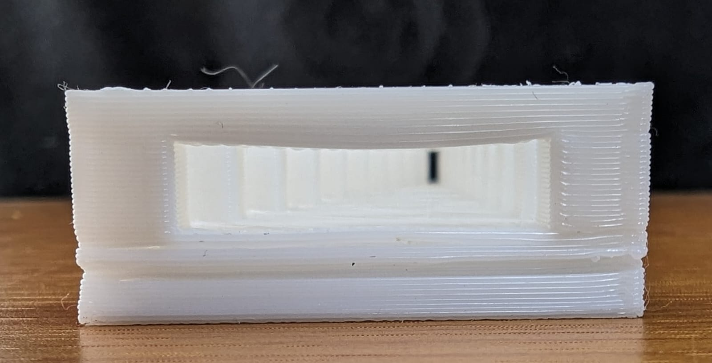 |
| Grosor de pared | Las paredes delgadas pueden no imprimirse bien, mientras que las paredes muy gruesas pueden perder material y tiempo. |
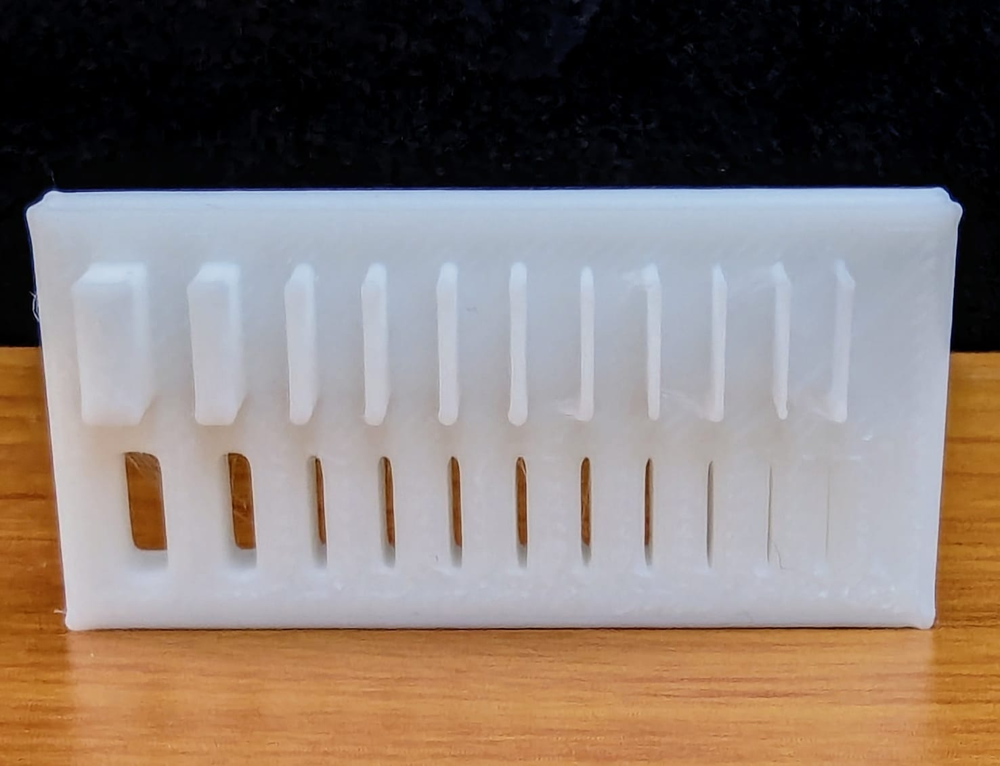 |
| Dimensiones | Las dimensiones exactas son cruciales. La impresión 3D puede introducir varianzas debido a problemas de contracción de materiales o calibración de la impresora. |
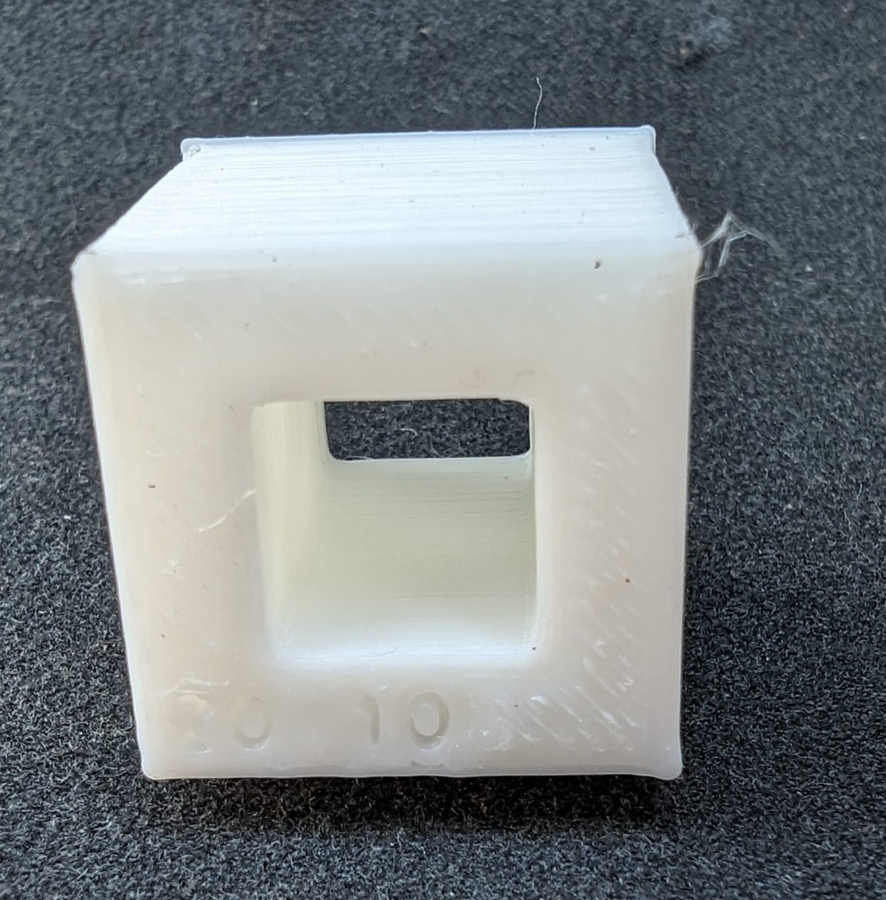 |
| Anisotropía | Los objetos impresos pueden tener diferentes resistencias en diferentes direcciones debido a la construcción capa por capa. |
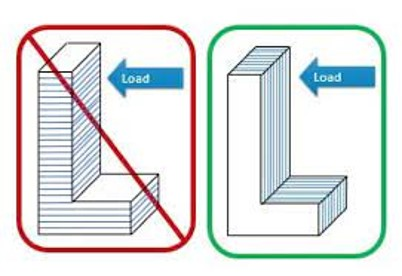 |
| Surface Finish | El acabado de superficie está influenciado por la resolución de la impresora, el material y las técnicas de post-procesamiento como lijado o suavización química. |
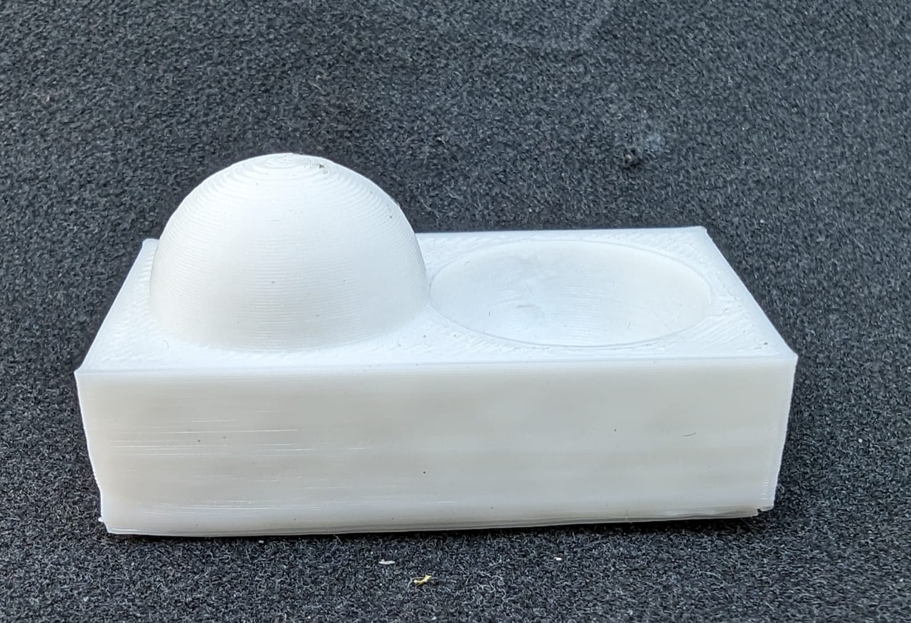 |
| Limpieza | La limpieza implica el espacio entre las estructuras de soporte y la parte real que se está imprimiendo. El aclaramiento adecuado garantiza que los soportes puedan eliminarse fácilmente sin dañar la impresión, normalmente alrededor de 0,2 mm a 0,5 mm dependiendo del material y la resolución de impresión. |
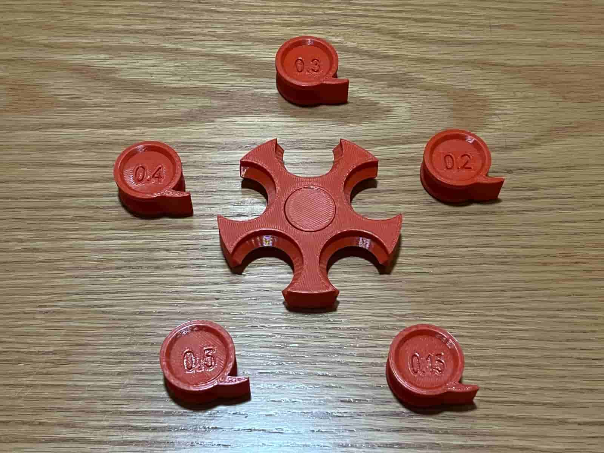 |
| Infill | El interior de una impresión 3D se llama infill, y se puede ajustar en términos de densidad 0% es hueco, mientras que el 100% es sólido. |
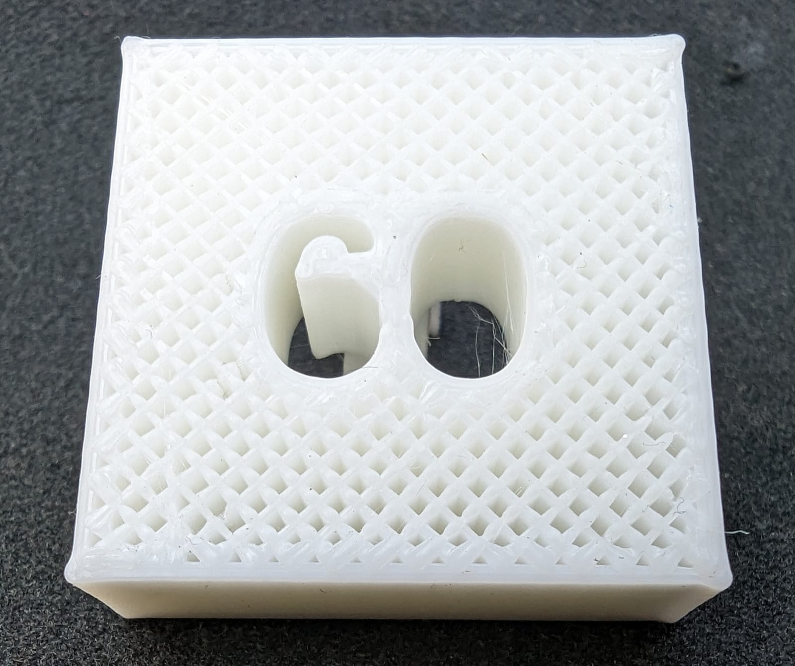 |
Cómo utilizar la impresora
Cómo crear y guardar un archivo 3D
1.- Diseña tu pieza en un programa de modelado (Tinkercad, Fusion 360, Blender, etc.).
2.- Cuando termines, guarda en formato .stl:
3.- Archivo > Guardar como > STL.
4.- Selecciona binario y las unidades en milímetros
Ejemplo: un llavero, un cubo o un soporte sencillo.
Preparar el archivo en Ultimaker Cura
El .stl necesita convertirse en un archivo G-code, que es lo que la Ender 3 entiende.
1.-Abrir Cura y añadir la impresora: * Primera vez: Aparece un asistente para añadir impresora. Selecciona Creality > Ender 3. * Ventana que aparece: panel de Cura con la “cama virtual” (una cuadrícula que simula la cama de impresión). * Configura Creality Ender 3 en el programa. * Ajusta el tamaño de impresión y diámetro del filamento (normalmente 1.75 mm).
2.-Importar tu modelo .stl
* Arrástralo o usa Archivo > Abrir
* Ventana que aparece: el modelo aparece sobre la base virtual en Cura.
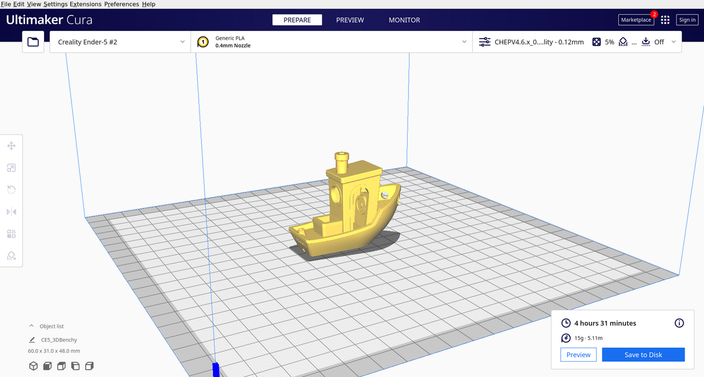
3.-Mover/rotar/escalar la pieza si es necesario (Localizado en la barra izquierda)

4.-Configurar: * Material: PLA (ideal para principiantes) * Esta en el derecho: Ajustes de impresión (material, altura de capa, relleno, soportes) * Resolución: 0.2 mm (calidad estándar) * Relleno: 20% (equilibrio entre resistencia y material) * Ventana que aparece: al modificar algo, verás cambios inmediatos en la vista previa.
Hacer clic en Slice (abajo a la derecha)
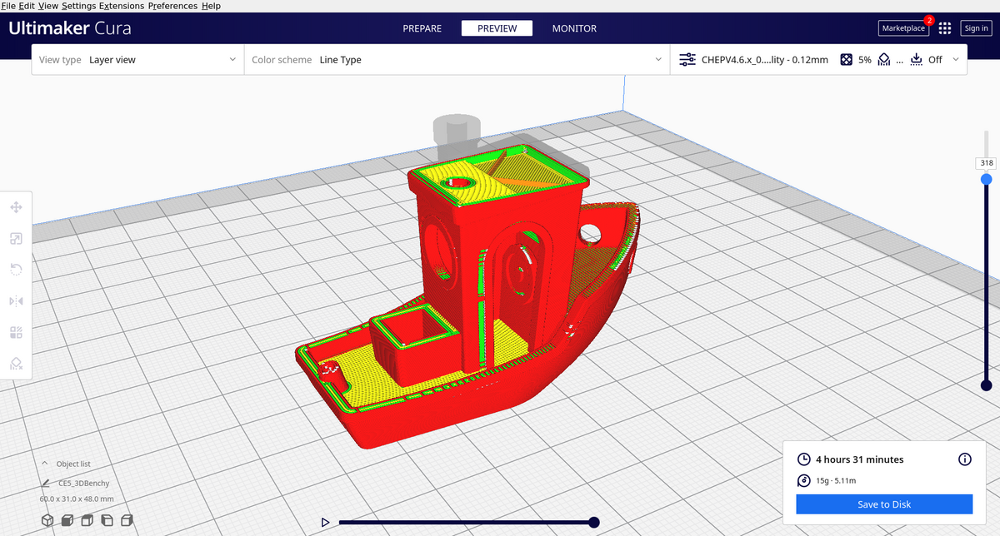
(Así se ve el modelado utilizando la opción de "Slice")
- Ventana que aparece: aparece un resumen con:
- Tiempo estimado
- Material que usará
- Botón Guardar en Disco o Guardar en tarjeta SD
- Guardar en la microSD
- Selecciona la carpeta o directamente la tarjeta microSD
- Ventana que aparece: un aviso de confirmación de guardado
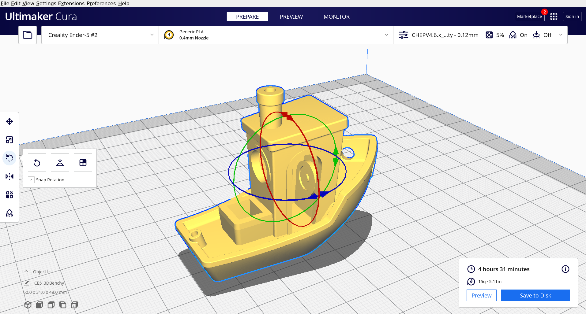
(El docuemnto listo para guardar)
Preparar la impresora
Aquí empiezas a usar la pantalla de la impresora
1.- Inserta la microSD en la impresora * Pantalla que aparece: menú principal con opciones como Prepare, Print, Control
2.- Precalentar la impresora * Ve a Prepare > Preheat PLA * Pantalla que aparece: muestra temperatura de la boquilla y cama subiendo hasta los valores (200 °C / 60 °C aprox.)
3.-Nivelar la cama (solo la primera vez o si ves fallas) * Ve a Prepare > Auto home * Luego desactiva motores (Disable steppers) para mover el cabezal a mano * Coloca una hoja entre boquilla y cama en cada esquina y ajusta tornillos * Pantalla que aparece: “Home” cuando el cabezal está en posición inicial
Imprimir tu pieza
1.- Ve a print * Pantalla que aparece: lista de archivos .gcode en tu microSD
2.- Selecciona tu archivo * Pantalla que aparece: regresa al “Home” mostrando el nombre del archivo y el estado de calentamiento
3.- Cuando la impresora llegue a temperatura, inicia la impresión * Pantalla que aparece: * Barra de progreso (%) * Tiempo transcurrido y tiempo estimado * Temp. actual de boquilla y cama
Retirar la pieza
1.- Espera a que la cama enfríe (pantalla vuelve al menú “Home”)
2.- Retira con espátula y corta soportes
Cómo cambiar el filamento
También desde la pantalla de la impresora
1.- Calienta la boquilla a 200 °C * Pantalla muestra “Heating…” y luego “Target: 200 °C”
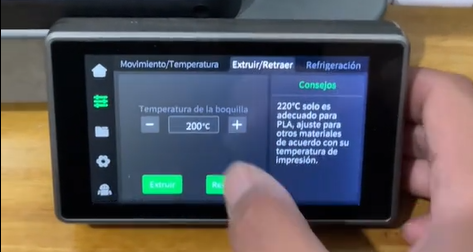
2.- Saca el filamento viejo presionando el resorte del extrusor y jalandolo (Una vez retirado, cortas la punta del filamento)
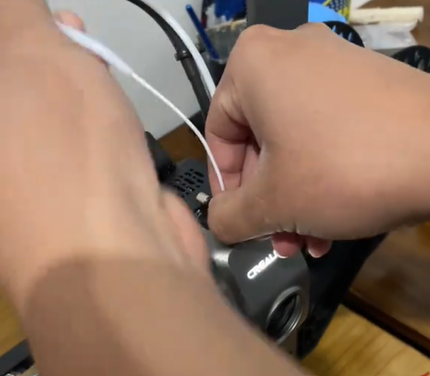
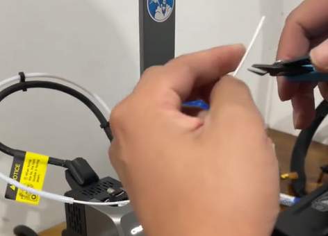
3.- Mete el filamento nuevo hasta que salga por la boquilla * La pantalla muestra la temperatura estable y puedes ver salir el material